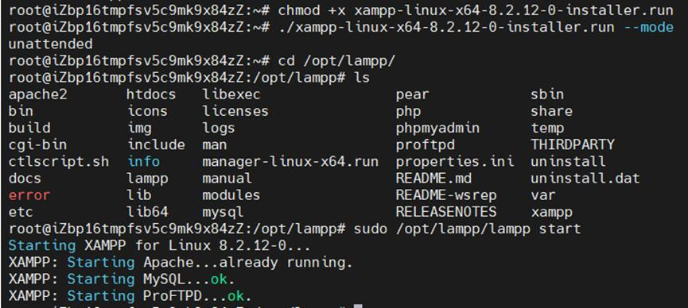
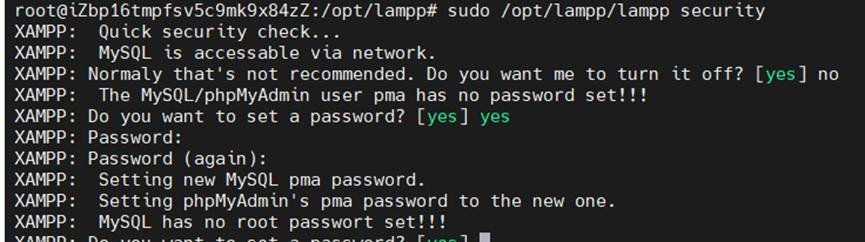
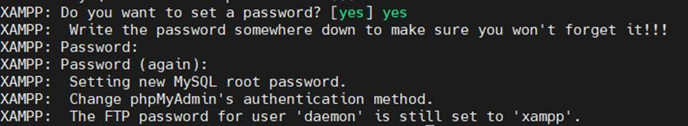
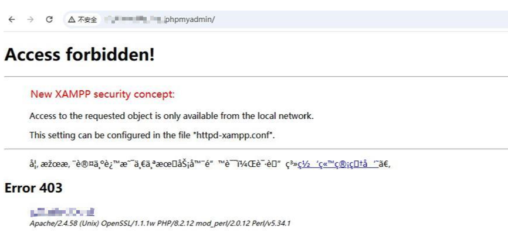
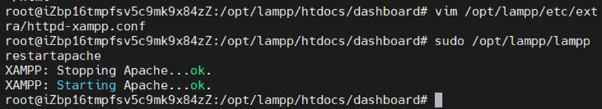
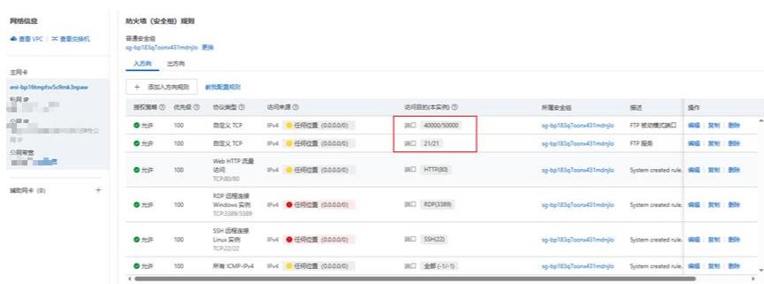

Web 运行环境
XAMPP 部署
目标
通过官方安装包在 Debian 环境中完成 XAMPP 安装，并处理 MySQL 安全设置、phpMyAdmin 访问限制和 Apache 重载，让官网运行环境具备基础可用性。
1. 下载并安装 XAMPP
为了减少多组件逐一安装的复杂度，这个项目采用 XAMPP 作为集成运行环境，统一提供 Apache、MySQL、PHP 和 phpMyAdmin。
cd /root
wget https://sourceforge.net/projects/xampp/files/XAMPP%20Linux/8.2.12/xampp-linux-x64-8.2.12-0-installer.run
chmod +x xampp-linux-x64-8.2.12-0-installer.run
sudo ./xampp-linux-x64-8.2.12-0-installer.run --mode unattended
/opt/lampp 目录结构，确认 Apache、MySQL、htdocs 等核心组件已就位。2. 验证服务状态
安装完成后，先检查 Apache 和 MySQL 是否正常启动，这一步能快速发现端口冲突、目录缺失或配置异常等问题。
sudo /opt/lampp/lampp start
sudo /opt/lampp/lampp status3. 处理 MySQL 安全初始化
XAMPP 默认状态下数据库访问策略相对宽松，需要通过安全脚本完成基础口令设置和访问方式调整。网页展示里只保留步骤本身，不展示真实密码。


4. 解除 phpMyAdmin 的本地访问限制
为了便于后续远程管理数据库，需要调整 httpd-xampp.conf，把 phpMyAdmin 的目录访问权限从默认的本地访问改成按需求可达。
sudo vim /opt/lampp/etc/extra/httpd-xampp.conf
sudo /opt/lampp/lampp restartapache

5. 安全组与后续端口准备
官网部署过程中，除了 Web 服务本身，还需要结合实际运维场景处理云平台安全组规则。手册里记录了对 FTP 相关端口的开放准备，页面展示里保留了操作界面，但已隐藏具体公网标识。

6. 阶段小结
这一步不仅是“把 XAMPP 装起来”，更重要的是处理默认配置带来的可用性和安全问题，让后续 WordPress 程序能在稳定的 Web 运行环境上继续部署。
本阶段成果
完成 Debian 环境中的 XAMPP 安装、核心服务状态验证、MySQL 基础安全设置和 phpMyAdmin 访问配置，为 WordPress 程序部署准备好运行环境。